Deluxe-Zimmer
Mit eigener Infrarotsauna im Bad: ein kleines Wellnesserlebnis auf Ihrem Zimmer.
- ca. 25 m²
- Infrarotsauna
- max. 2 Pers.
- Sitzecke
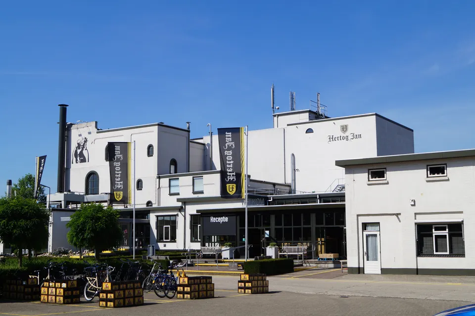
Ausflug
Mit einem Guide durch die Brauerei in Arcen, vom Hopfen bis zum Probierglas. 23 Minuten mit dem Auto von Ihrem Hotelzimmer in Venray.
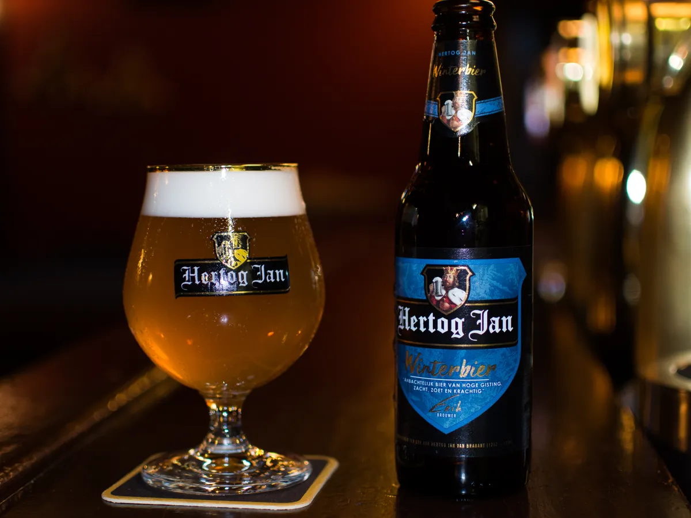
In Arcen, nahe der Maas, braut Hertog Jan sein Bier. Von Hotel Asteria aus sind Sie in 23 Minuten mit dem Auto dort. Bei der Führung gehen Sie mit einem Guide durch das alte Brauereigebäude und verfolgen den ganzen Brauprozess: Sie riechen den Hopfen, probieren das Malz und zum Schluss das Bier selbst.
Sie kommen an den kupfernen Sudkesseln vorbei und enden in einem Keller mit Flaschen Grand Prestige aus verschiedenen Jahrgängen. Eine Führung dauert etwa eine Stunde und findet auf Niederländisch statt. Sie möchten lieber eine Führung auf Deutsch oder Englisch? Fragen Sie vorab direkt bei der Brauerei nach.
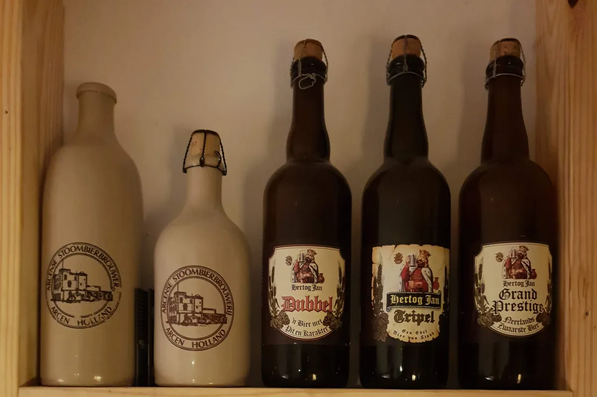
Wer mehr sehen möchte, bucht die Liefhebbers Tour (Tour für Bierliebhaber). In etwa zweieinhalb Stunden kommen Sie an Orte, die die normale Führung nicht zeigt: den Reifekeller des Grand Prestige, die Geschichte hinter den fassgereiften Vatgerijpt-Bieren und die Versuchsbrauerei. Die Tour ist für höchstens sechzehn Teilnehmer und erst ab 18 Jahren.
Einmal im Jahr steht außerdem ein Tag ganz im Zeichen des Grand Prestige, mit besonderen Führungen und Verkostungen. Die Termine gibt die Brauerei über ihren Newsletter und ihre Social-Media-Kanäle bekannt.
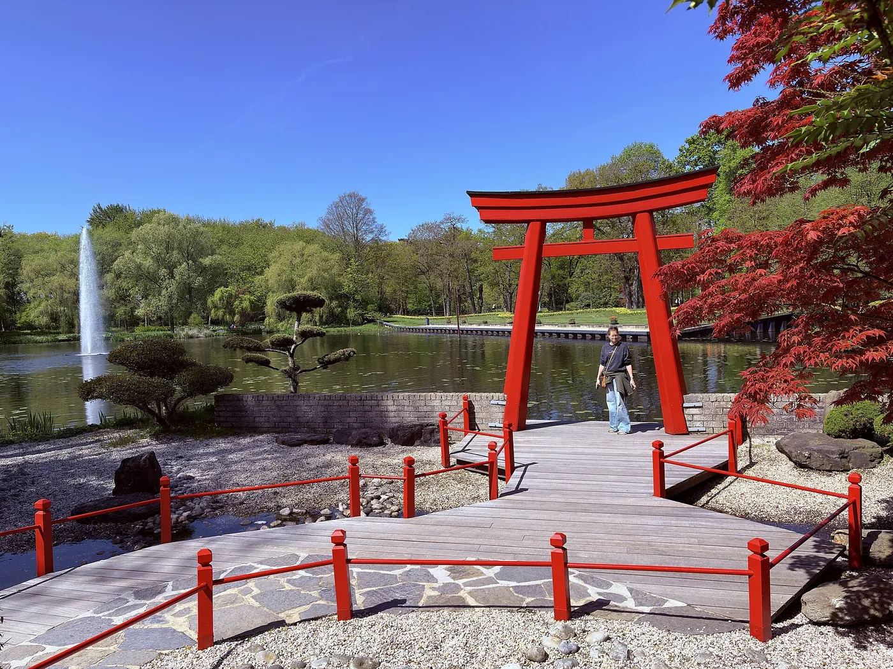
Gegenüber der Brauerei liegt das Café de Hertog Jan Proeverij. Das Pils kommt dort über eine Bierleitung unter der Straße direkt aus der Brauerei, dazu gibt es rund 125 Spezialbiere. Sie können dort zu Mittag essen, etwas trinken oder zu Abend essen und bis zu 90 Tage im Voraus reservieren. Im Sommer verbinden Sie den Besuch mit den Schlossgärten Arcen (Kasteeltuinen Arcen), vier Minuten mit dem Auto entfernt. Die Gärten sind im Winter geschlossen und öffnen Ende März wieder.
Fotos: Jochem Pluim (CC BY-SA 4.0), Michelexel (CC BY-SA 4.0), Vincent van Zeijst (CC BY-SA 4.0), zugeschnitten; via Wikimedia Commons.
Buchen Sie die Führung um die Mittagszeit und reservieren Sie im Anschluss einen Tisch zum Mittagessen in der Proeverij gegenüber. Klären Sie vor der Abfahrt, wer nach Venray zurückfährt; diese Person trinkt an dem Tag kein Bier. Und beachten Sie: Im Winter ist die Brauerei montags und dienstags geschlossen.
Team Rezeption, Hotel Asteria
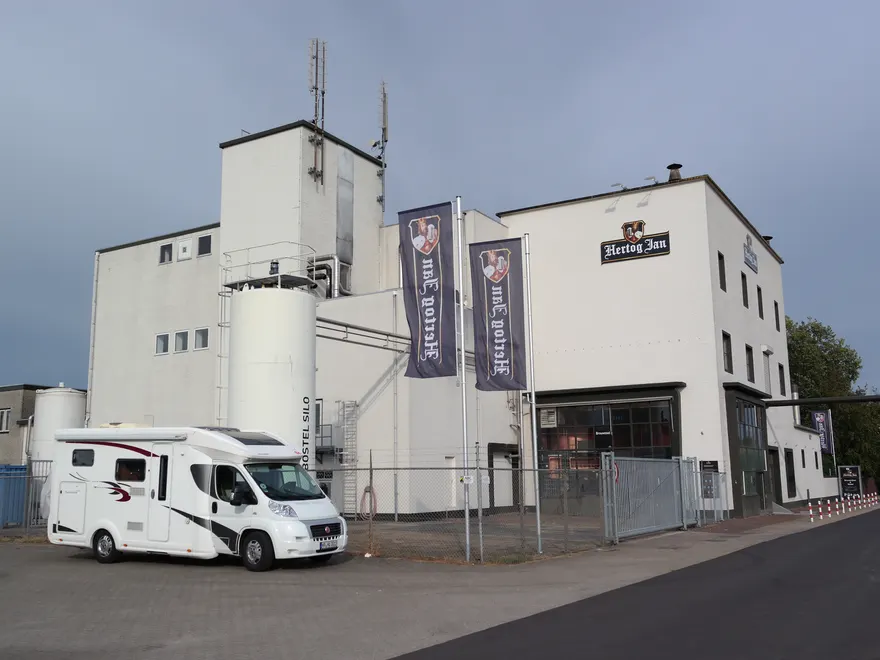
So gilt es von November bis April. Donnerstag und Sonntag nur für Führungen.
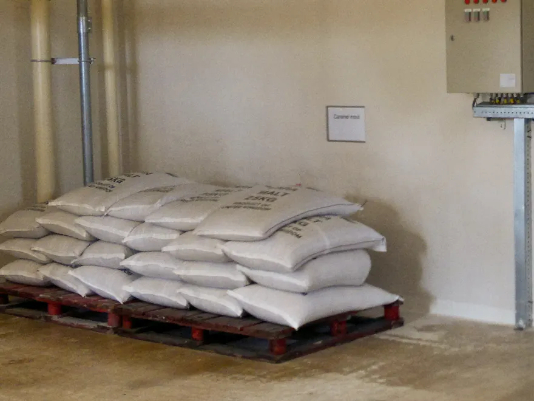
Auf brouwerij.hertogjan.nl. Eine Führung findet ab insgesamt sechs Teilnehmern statt.
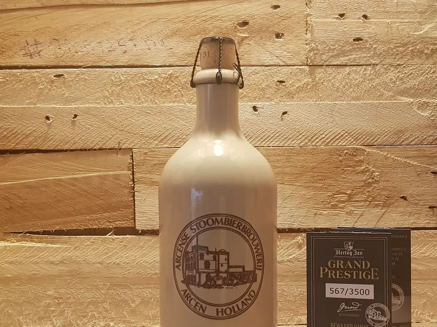
Barzahlung ist nicht möglich. Sie zahlen mit Debitkarte oder Kreditkarte (Visa oder Mastercard).
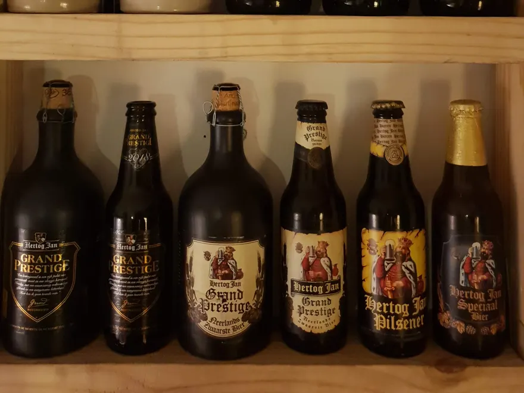
Schmale, niedrige Gänge. Rollatoren, Kinderwagen, Rollstühle und Hunde sind nicht möglich, Blindenführhunde schon.
Fotos: Steven Lek (CC BY-SA 4.0), larsjuh (CC BY 2.0), Michelexel (CC BY-SA 4.0) und Michelexel (CC BY-SA 4.0), zugeschnitten; via Wikimedia Commons.
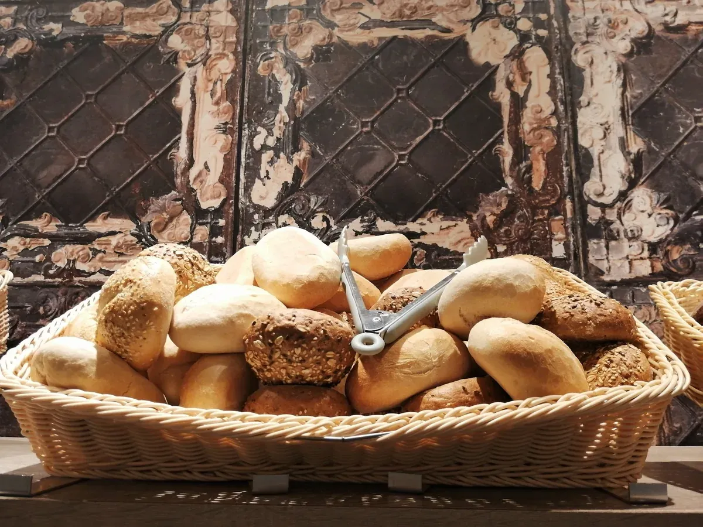
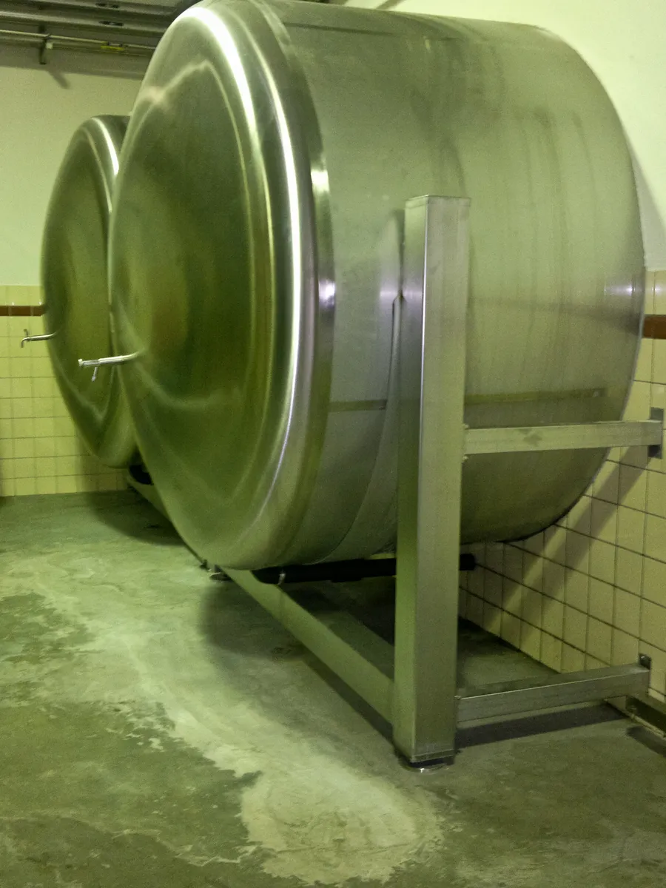
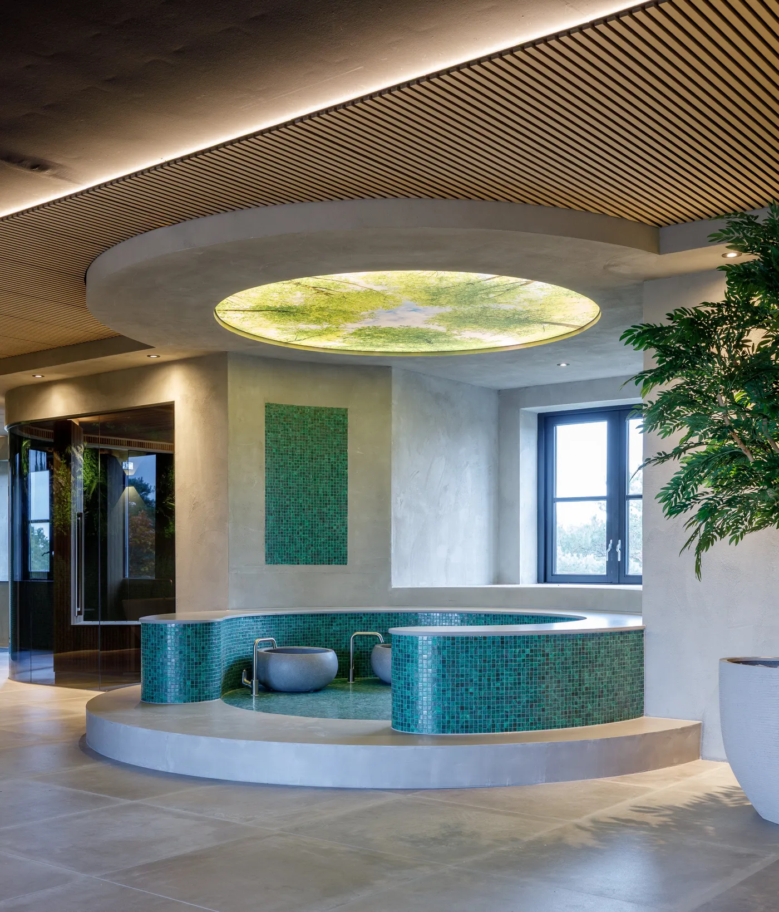
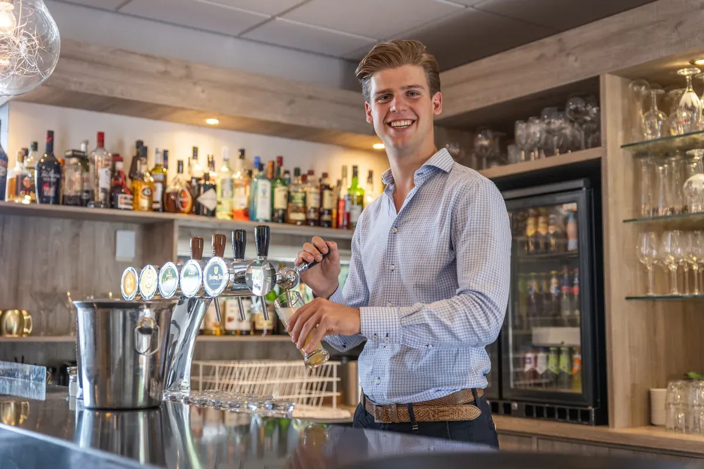
Frühstück im Hotel, gegen Mittag zur Brauerei nach Arcen und am späten Nachmittag zurück in die Sauna und zum Dinner.
Das Frühstücksbuffet steht unter der Woche von 7.00 bis 10.00 Uhr bereit, am Wochenende von 8.00 bis 10.30 Uhr. Danach fahren Sie in 23 Minuten nach Arcen.
Eine Stunde Führung mit Verkostung, danach der Brauereiladen und ein Mittagessen in der Proeverij gegenüber. Wer zurückfährt, lässt das Bier stehen.
Zurück in Venray entspannen Sie in der Saunalandschaft. Der Wellnessbereich ist montags bis donnerstags von 16.00 bis 22.00 Uhr geöffnet und freitags bis sonntags von 12.00 bis 22.00 Uhr. Dienstag ist Badekleidungstag.
Der Tag endet am Tisch in der Brasserie des Hotels. Die Küche ist bis 21.30 Uhr geöffnet, danach ist Ihr Zimmer nur eine Aufzugsfahrt entfernt.
Foto Tanks: larsjuh (CC BY 2.0), zugeschnitten; via Wikimedia Commons.
Nach einem Tag in Arcen müssen Sie dann nirgendwo mehr hin. Wählen Sie Ihr Zimmer; den Preis für Ihre Daten sehen Sie direkt bei der Buchung.
Mit eigener Infrarotsauna im Bad: ein kleines Wellnesserlebnis auf Ihrem Zimmer.
Modern eingerichtet, mit Sitzecke und eigenem Bad: alles für einen entspannten Aufenthalt in Nord-Limburg.
Größer als das Comfort-Zimmer und mit dem gewissen Extra: viel Platz und eine bequeme Sitzecke.
Unser geräumigstes Zimmer, mit eigener Infrarotsauna, großer Sitzecke und Platz für bis zu vier Personen.
Für besondere Momente: freistehende Badewanne, große begehbare Dusche, Bademäntel und Badeschuhe.
Extra Platz für Familien oder Freunde, die zusammen unterwegs sind, mit drei Einzelbetten und Sitzecke.
Für Gäste mit eingeschränkter Mobilität: großzügig geschnitten, mit breiten Türen und angepasstem Bad.
Die Brauerei liegt in Arcen an der Maas, südöstlich von Venray. Auf der Karte sehen Sie außerdem drei weitere Ausflugsziele in der Nähe des Hotels.
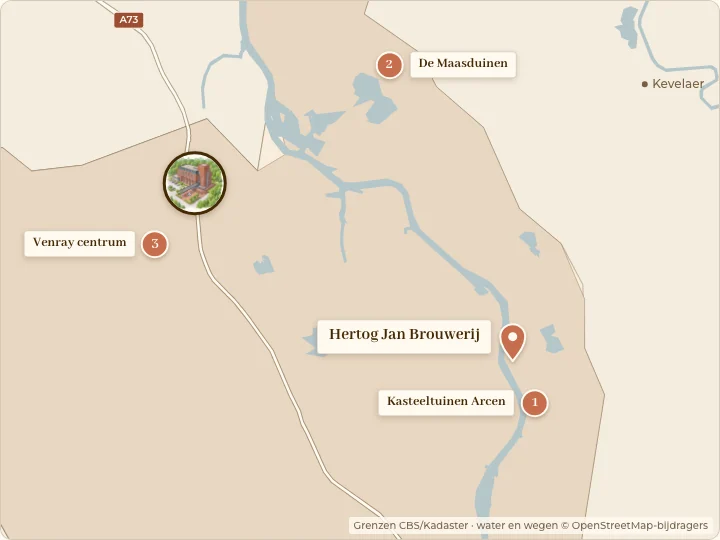
Hertog Jan Brouwerij, Kruisweg 44, 5944 EN Arcen
Es sind 20,5 Kilometer, etwa 23 Minuten mit dem Auto. Mit dem Rad sind es 16,3 Kilometer, rund 70 Minuten; Fahrräder leihen Sie an unserer Rezeption. Wegen Bauarbeiten am Kruisweg und an der Maasstraat gibt es zurzeit eine Umleitung: Folgen Sie mit dem Auto den Schildern B.
Etwa eine Stunde. Danach können Sie noch in den Brauereiladen und in die Hertog Jan Proeverij. Die Führungen sind auf Niederländisch; für eine Führung auf Deutsch oder Englisch fragen Sie bitte vorab bei der Brauerei nach. Die Liefhebbers Tour dauert etwa zweieinhalb Stunden und ist nur für Gäste ab 18 Jahren.
Das empfiehlt die Brauerei ausdrücklich; Sie buchen auf brouwerij.hertogjan.nl. Eine Führung kostet 19,95 € für Erwachsene und 9,95 € für Jugendliche von 12 bis 17 Jahren; Kinder unter 12 kommen in Begleitung kostenlos mit. Das sind die Preise vom November 2026. Bezahlen können Sie nur mit Debitkarte oder Kreditkarte.
Ja, die Führung findet drinnen statt. Achten Sie aber auf den Wochentag: Von November bis April ist die Brauerei mittwochs, freitags und samstags von 11.00 bis 17.00 Uhr geöffnet, donnerstags und sonntags nur für Führungen. Montags und dienstags ist sie geschlossen; in den niederländischen Schulferien ist auch dienstags geöffnet.
Nein, nur Blindenführhunde dürfen mit. Bedenken Sie außerdem, dass Sie durch schmale, niedrige Gänge gehen und 144 Stufen nehmen; Rollatoren, Kinderwagen und Rollstühle sind nicht möglich.
Ja. Der Wellnessbereich ist montags bis donnerstags von 16.00 bis 22.00 Uhr geöffnet und freitags bis sonntags von 12.00 bis 22.00 Uhr. Dienstag ist Badekleidungstag. In der Brasserie essen Sie bis 21.30 Uhr zu Abend. Wenn Sie bei der Verkostung getrunken haben, lassen Sie jemanden fahren, der nichts getrunken hat. Bei Hotel Asteria parken Sie kostenlos.
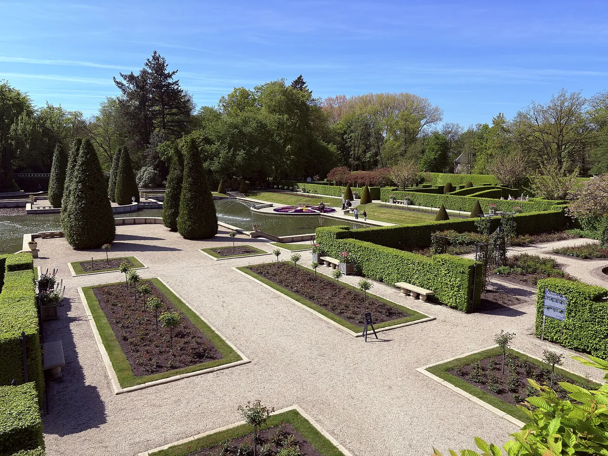
GärtenKasteeltuinen Arcen25 min mit dem AutoMehr erfahren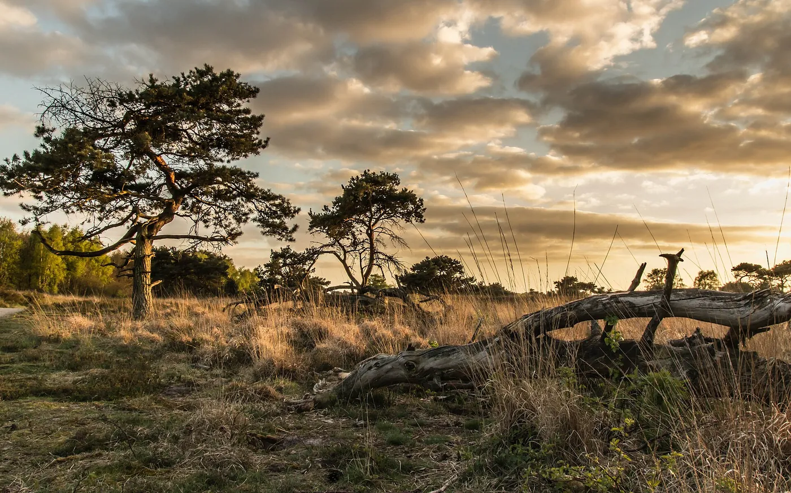
NaturNationalpark De Maasduinen15 min mit dem AutoMehr erfahren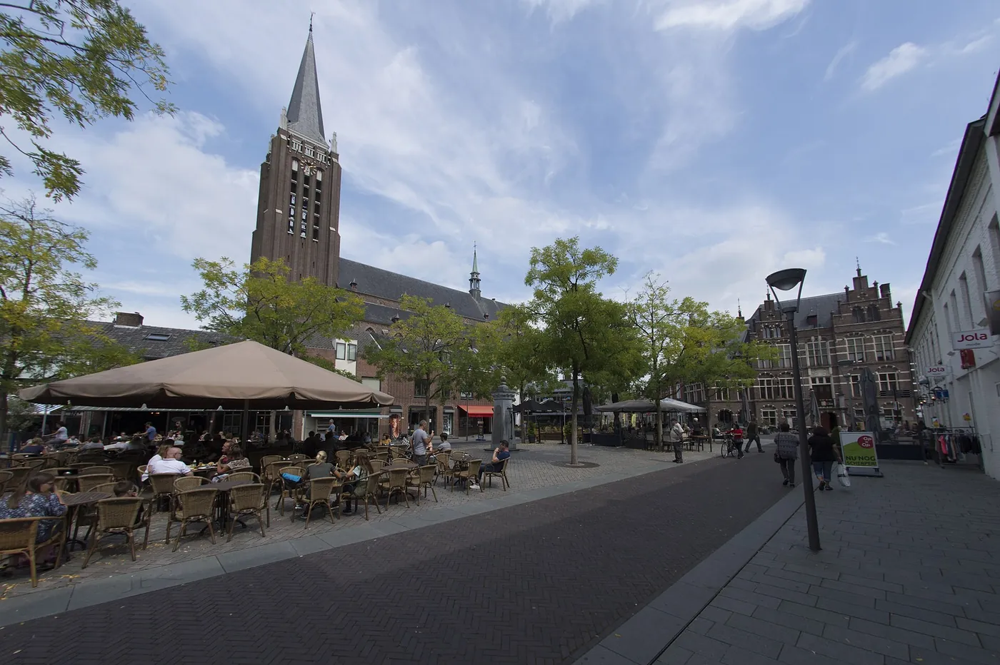
ZentrumZentrum von Venray7 min mit dem AutoMehr erfahrenFotos: Vincent van Zeijst (CC BY-SA 4.0), Lieblingsgouda (CC BY-SA 3.0 NL), Dosseman (CC BY-SA 4.0), zugeschnitten; via Wikimedia Commons.
Titelfoto: B. Hulshoff (CC BY-SA 4.0); via Wikimedia Commons.
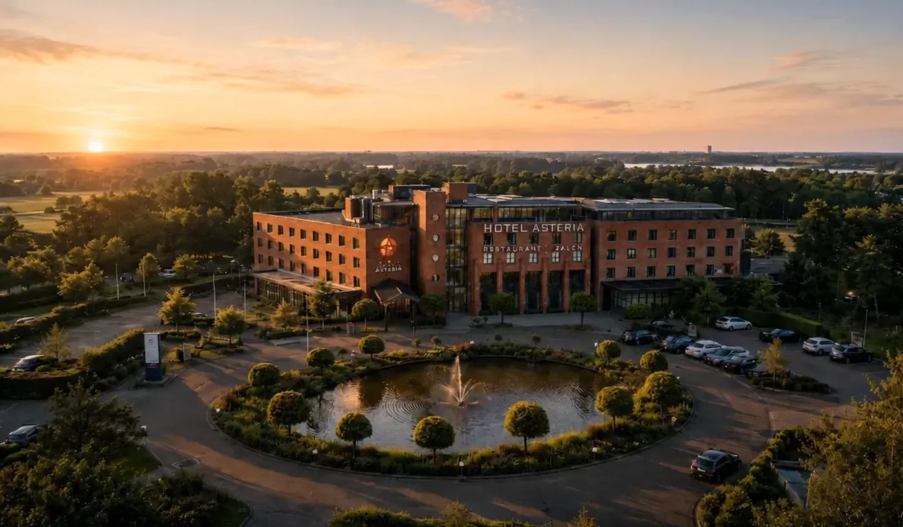
23 Minuten von Arcen entfernt warten Ihr Zimmer, der Wellnessbereich auf der Top Floor und ein Tisch in der Brasserie.
Jetzt buchen